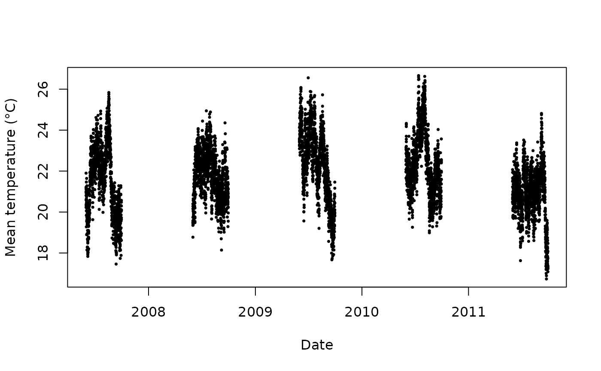

barcelona_temp.RdA simulated dataset containing daily temperature, population, deprivation, and mortality data for 10 districts of Barcelona during the summer period from 2007 to 2011.
barcelona_tempA data frame with 6100 observations and 9 variables:
Date of observation. Data cover 1 June to 30 September for each year from 2007 to 2011.
Daily maximum temperature in degrees Celsius.
Daily minimum temperature in degrees Celsius.
Daily mean temperature in degrees Celsius.
District identifier, ranging from 01 to 10.
Population size of the district.
Scaled deprivation index of the district.
Daily mortality count in the district.
Simulated data generated for the dlnmLPS package.
The dataset is provided solely for illustrative and demonstration
purposes, in particular for demonstrating the methods implemented
in the dlnmLPS package. The data are simulated and do not
represent actual observations from Barcelona.
The dataset represents the 10 Barcelona districts observed daily during the summer period (1 June–30 September) over five years (2007–2011). Temperature variables vary by date, while population size and deprivation index are district-level characteristics.
The data were generated to provide a realistic example for demonstrating distributed lag non-linear modelling and related methods. They should not be interpreted as real epidemiological or climatological observations.
data(barcelona_temp)
head(barcelona_temp)
#> date Tmax Tmin Tmean District pop depriv dtot
#> 1 2007-06-01 25.85997 17.93684 21.89841 01 659845.8 1.188957 26
#> 2 2007-06-02 25.71266 17.21590 21.46428 01 659845.8 1.188957 27
#> 3 2007-06-03 25.33624 16.95453 21.14538 01 659845.8 1.188957 23
#> 4 2007-06-04 25.47256 15.42090 20.44673 01 659845.8 1.188957 23
#> 5 2007-06-05 23.89031 16.21367 20.05199 01 659845.8 1.188957 26
#> 6 2007-06-06 24.08012 16.47465 20.27739 01 659845.8 1.188957 18
# Inspect the temperature variables
summary(barcelona_temp[, c("Tmax", "Tmin", "Tmean")])
#> Tmax Tmin Tmean
#> Min. :21.06 Min. :12.16 Min. :16.73
#> 1st Qu.:25.17 1st Qu.:16.21 1st Qu.:20.70
#> Median :26.26 Median :17.28 Median :21.78
#> Mean :26.30 Mean :17.30 Mean :21.80
#> 3rd Qu.:27.41 3rd Qu.:18.39 3rd Qu.:22.86
#> Max. :31.84 Max. :22.28 Max. :26.66
# Number of districts
unique(barcelona_temp$District)
#> [1] "01" "02" "03" "04" "05" "06" "07" "08" "09" "10"
# Plot mean temperature over time
plot(barcelona_temp$date, barcelona_temp$Tmean,
xlab = "Date", ylab = "Mean temperature (°C)",
pch = 16, cex = 0.5)
